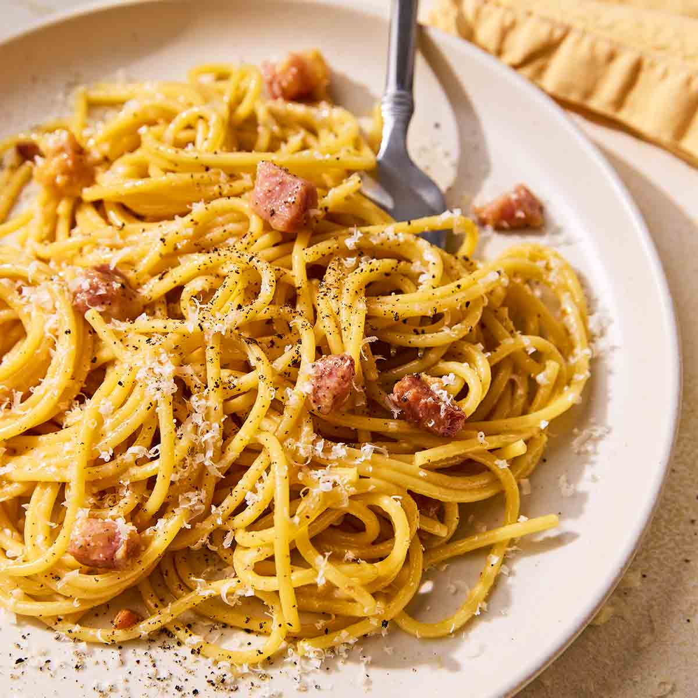

Spaghetti

Description
A classic Italian dish made with al dente spaghetti, rich tomato sauce,
and a touch of garlic and herbs.
Ingredients
- 200g spaghetti
- 1 cup marinara sauce
- 2 cloves garlic
- 2 tablespoons olive oil
- Salt and pepper
- Parmesan cheese
Steps
- Cook the spaghetti according to package instructions.
- In a pan, heat olive oil and sauté minced garlic until fragrant.
- Add marinara sauce and simmer for 5 minutes.
- Toss the spaghetti in the sauce until well coated.
- Season with salt, pepper, and top with Parmesan cheese.